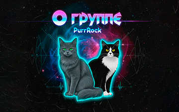

Ниппель (Nibble)
Серебристый Нибелунг с зелёными глазами.
Серьёзный, мудрый и рассудительный ветеран сцены.
Пупс (Pips)
Кот окраса такседо с жёлтыми глазами.
Шустрый, весёлый, шаловливый и полный энергии.
Виртуальная рок-банда двух котов.
Мы играем всё, что мурчит в душе: рок, романс, хип-хоп, баллады.
Скоро тут появится музыка и истории прямиком из кошачьей головы.
Альбом "Диорама" (2025)
Каждая песня — это диорама,
где коты наблюдают за драмами людей и вещей.
Дао тунца
рэп о проблеме коммуникации и обесценивании.
Король картонного замка
гимн воображению и простым радостям.
Девятая
метафора бремени чужих ожиданий.
Мех vs Tech
эпичная покатушка на пылесосе!
Блюз затерянной мыши
песня о памяти и утрате.
Баллада о Диком озере
мистическая легенда о любви и смерти.
Альбом "Песни из шкафа" (2025)
Альбом забытых песен, ждавших своего часа.
Меньше котов, больше боли, света и иронии.
Спасибо вам
романс о несбывшейся любви.
Вальс бесконечности
прощальный танец на берегу моря.
Я тот, кто сидит в шкафу
о внутреннем пробуждении.
Зимний блюз
одиночество и надежда.
Инфоцыганская
хип-хоп про лёгкие деньги.
Феникс
антивоенный марш.
Тамара
баллада о роковой морской сирене.
Костяные рыбы / Abyss Fish
космический рок-хоррор.
Железный Дед / Iron Elder
гимн силы и духа гор.
Альбом "Hero Cats" (2024)
Песни о мире, увиденном глазами поющих котов.
Коты лишь дают голос историям людей.
Мигрант / Migrant
о тяжёлой жизни и тоске вдали от дома.
Коты на колёсах / Cats on the Wheels
о бесстрашных котах-путешественниках.
Тревел-блогер / Travel Blogger
рок о погоне за лайками.
Беседа на подоконнике / Windowsill Reflections
философия у окна.
Коты-квадроберы
заводной абсурдный Rock-n-Roll.
Новогодний мур-мюр
поздравление от котов.
Какова Цена? / Who Pays the Price?
антивоенная песня.
Новые игры
первая мяу-попытка.

2025
Топь
Конфликт христианства и язычества
PurrRock против машин
Усатая гвардия или бездушная техника?
Альбом "Диорама" (2025)
Каждая песня — это диорама,
где коты наблюдают за драмами людей и вещей.
Дао тунца
рэп о проблеме коммуникации и обесценивании.
Король картонного замка
гимн воображению и простым радостям.
Девятая
метафора бремени чужих ожиданий.
Мех vs Tech
эпичная покатушка на пылесосе!
Блюз затерянной мыши
песня о памяти и утрате.
Баллада о Диком озере
мистическая легенда о любви и смерти.
Альбом "Песни из шкафа" (2025)
Альбом забытых песен, ждавших своего часа.
Меньше котов, больше боли, света и иронии.
Спасибо вам
романс о несбывшейся любви.
Вальс бесконечности
прощальный танец на берегу моря.
Я тот, кто сидит в шкафу
о внутреннем пробуждении.
Зимний блюз
одиночество и надежда.
Инфоцыганская
хип-хоп про лёгкие деньги.
Феникс
антивоенный марш.
Тамара
баллада о роковой морской сирене.
Костяные рыбы / Abyss Fish
космический рок-хоррор.
Железный Дед / Iron Elder
гимн силы и духа гор.
Альбом "Hero Cats" (2024)
Песни о мире, увиденном глазами поющих котов.
Коты лишь дают голос историям людей.
Мигрант / Migrant
о тяжёлой жизни и тоске вдали от дома.
Коты на колёсах / Cats on the Wheels
о бесстрашных котах-путешественниках.
Тревел-блогер / Travel Blogger
рок о погоне за лайками.
Беседа на подоконнике / Windowsill Reflections
философия у окна.
Коты-квадроберы
заводной абсурдный Rock-n-Roll.
Новогодний мур-мюр
поздравление от котов.
Какова Цена? / Who Pays the Price?
антивоенная песня.
Новые игры
первая мяу-попытка.
Картинки к песням
Разный кото-арт.

Спасибо!
Творчество PurrRock — это независимый проект,
который существует благодаря вашей поддержке.
Если вам нравятся наши истории и музыка,
вы можете помочь нам создавать новые миры.
Особая благодарность:
Vasil Litvin — основной автор проекта
Мария Протасова — автор нескольких текстов песен
Поддержать проект:
Каждый вклад, большой или маленький, помогает нам оставаться на плаву и продолжать мурлыкать для вас.


{kind=link}
{kind=link}
{kind=link}
{kind=link}